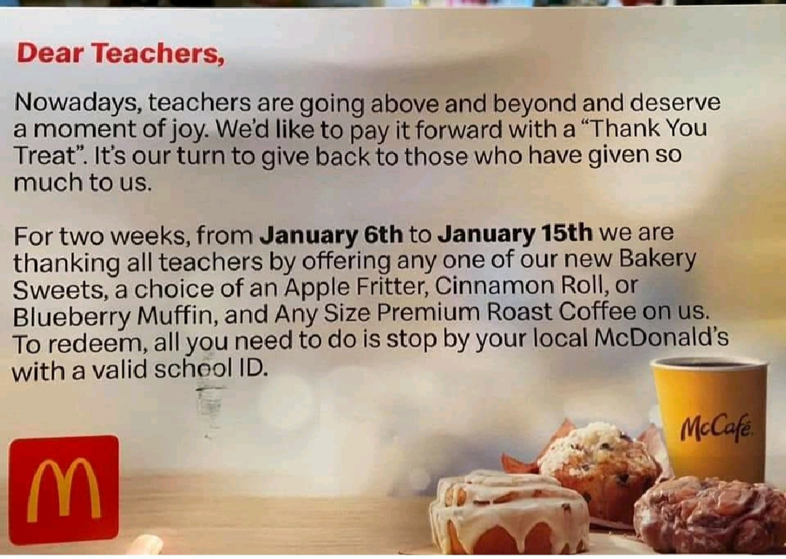
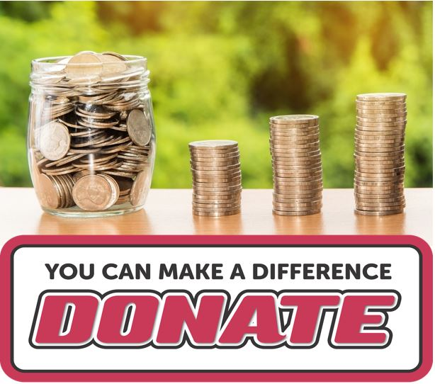
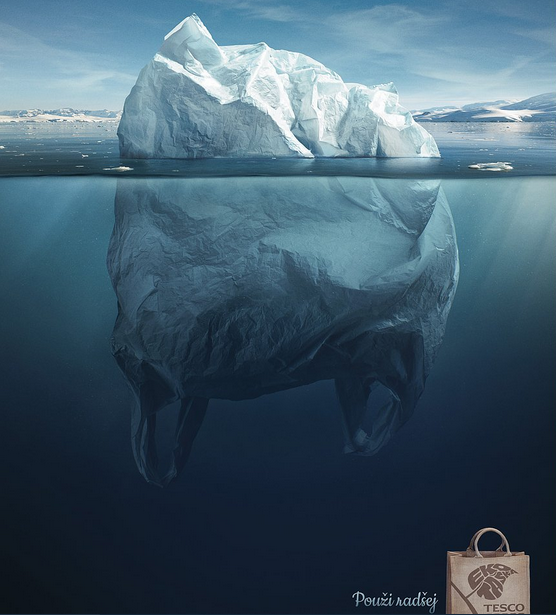
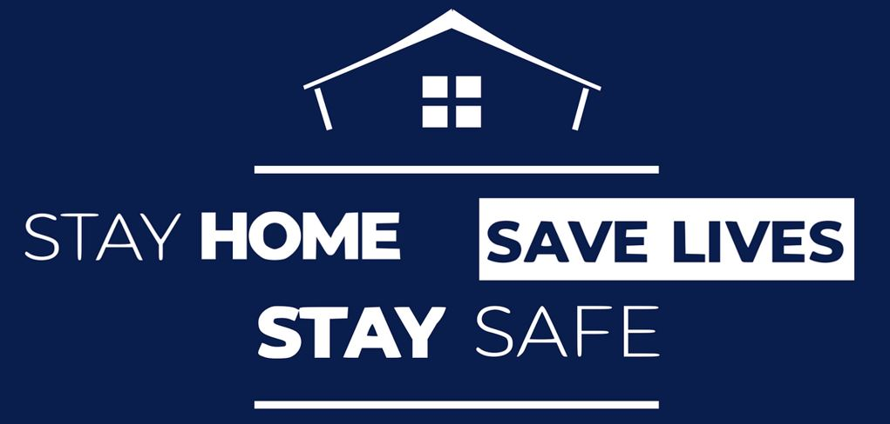
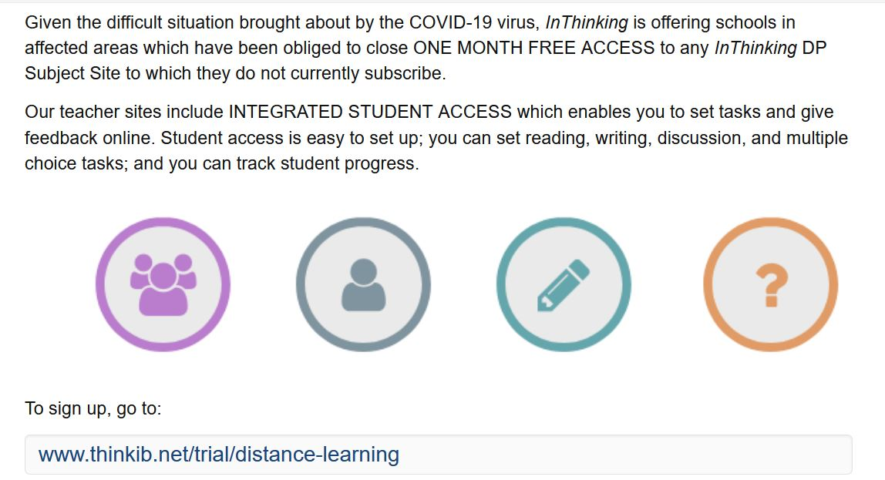

IB Docs (2) Team
IB Docs (2) Team

Corporate social responsibility
"Honesty is the cornerstone of all success. Without honesty, confidence and ability to perform shall cease to exist.”
- Mary Kay Ash (1918 - 2001), Founder of Mary Kay Cosmetics, Inc.
Corporate social responsibility (CSR) refers to the value, decisions and actions that impact society in a positive way. It is about an organization’s moral obligations to its stakeholders, the community, society as a whole and the environment. It is about an organization using ethical objectives to commit to behaving in a socially responsible way towards its internal and external stakeholders, not just to the owners or shareholders.
ATL Activity 1 (Thinking skills) - Corporate Social Responsibility (CSR) video documentary
Seconds from Disaster: The Deepwater Horizon documentary
Watch this excellent video documentary from National Geographic, which looks at the events of the Deepwater Horizon rig in the Gulf of Mexico. BP’s attempt to cut back on safety checks ultimately resulted in the world’s largest accidental marine oil spill, costing BP billions of dollars.
Consider the importance of CSR as you watch the disaster unfold.
Business organizations are ever more aware of the need for firms to set ethical objectives as part of their corporate social responsibility (CSR). Doing so helps businesses to earn or sustain a positive corporate image in the eyes of external stakeholder groups, such as pressure groups, the government, financiers, and customers. It can certainly help to create greater customer loyalty as more people are informed about and aware of the importance of social responsibilities towards others.
Internally, it can also help to improve the morale of workers, staff motivation, employee retention, and labour productivity.
The Internet and social media platforms make it very easy to expose organizations that act unethically and go against a moral code of ethical practice. By contrast, pursuing corporate social responsibilities and acting ethically can help the business to gain competitive advantages and to improve its profitability in the long-term.

Example of CSR from McDonald's in India during the coronavirus pandemic
Nevertheless, as with pursuing ethical objectives, the pursuit and implementation of CSR practices can have their drawbacks too. These limitations include:
Compliance costs of always trying to act in a socially responsible way, i.e. the costs of compliance with the firm's ethical code of conduct and society's expectations of corporate social responsibilities.
The added level of bureaucracy in following CSR codes of practice and formal company policies can delay decision-making, especially in large business organizations.
Hence, this can cause stakeholder conflict, i.e. shareholders, financiers, and investors may become upset due to the impact of higher production costs.
ATL Activity 2 (Communication and Social skills) - Think, Pair, Share

This collaboration activity has been suggested by my IBEN colleague, Gema Quintanilla, who teaches at ACS International School Egham, UK.
With a partner you are going to research a business' corporate social responsibility (CSR) and create a PowerPoint presentation, Infographic, or Flow Chart displaying your findings.
Sites recommended for infographics (free to sign up):
Your visual should include:
1. Your definition of Corporate Social Responsibility (CSR).
2. An explanation of the importance of CSR for your chosen business.
3. Examples of effective CSR from your chosen business.
Summarise your findings of such examples
Evaluate the benefits of adopting CSR for your chosen business
Evaluate how CSR benefits others external stakeholders, such as the local community and the environment.
4. Identify a business that has faced ethical issues (this can be for another organization of your choice).
Summarise your findings
Evaluate the effects of these issues on the business
Explain what the business has done to resolve the issue.
Try to use contemporary examples wherever possible.
ATL Activity 3 (Thinking skills) - Ethical objectives at Cadbury Schweppes
Read this case study from the excellent businesscasestudies.co.uk website to learn more about the importance of ethical business practices at Cadbury Schweppes by clicking the link here.
Just as business objectives are not static, the role and nature of corporate social responsibility also evolves over time.
A key purpose is to create a positive impact on the reputation of the organization. It is about building desirable products, practices and relationships that generate this positive impact.
Opinions change over time - what may have been considered socially acceptable in the past may no longer be the case, e.g. animal testing, the use of plastic carrier bags, sexist adverts, advertising of tobacco products, or targeting children in television advertisements. Also see ATL Activity 4 below.
Societal expectations and the growing popularity of social media have caused CSR to become more integrated into today’s corporate cultures with businesses playing a greater role in community relations.
Increasingly, businesses are interested in CSR as a genuine way to have a positive impact on their triple bottom line: ecological, social and economic sustainability.

Tesco (the UK's largest supermarket chain) uses adverts to discourage single-use plastics
Theory of Knowledge (TOK)
How do ethical considerations affect the way that knowledge is produced and used in Business Management?
ATL Activity 4 (Research and Self-management skills) - CSR during the Coronavirus pandemic

Students should investigate examples of both unethical and ethical business practices during the coronavirus (Covid 19) pandemic of 2019 - 2021. To what extent did the coronavirus crisis act as a catalyst for businesses to embrace corporate social responsibility (CSR)? Students should be prepared to share their responses with the rest of the class.
This link is a good starting point for students - "50 ways companies are giving back during the coronavirus pandemic", published by Forbes.
Suggestion class time: 45 minutes (or set as a Home Learning task).
Possible responses / solutions
Here's an example of an insurance company, Admiral, acting ethically and being socially responsible to vehicle owners during the Lockdown (I received this email, and was very pleasantly surprised):
"We hope this email finds you safe and well.
We wrote to you in April to say that we’re issuing £110 million ($143m) of insurance premium refunds to our motor insurance customers – that’s £25 ($32.50) of insurance premium for every one of the 4.4m cars and vans we insure. We’re giving the refund because there have been fewer cars on the road during the lockdown and our customers are driving less, which we expect to result in fewer insurance claims."
Whilst this amount is not significant for any individual car owner, this does suggest that Admiral were acting in the best interest of their customers who were told by the government not to use their vehicles during the lockdown period, but to stay home home in order to prevent the virus from spreading and thereby saving lives.
Other examples of businesses that displayed authentic CSR practices include:
Clarks, the British shoe retailer, announced in July 2020 that is would offer to replace children's school shoes for free if they grow out of them within the next six months. The deal was offered to all parents purchasing full price "back to school" children's shoes - including formal school shoes, boots, plimsolls and sports shoes.
Jack Ma (Founder of Alibab.com) donated tens of millions of dollars of his own money for coronavirus test kits and masks shipped to the USA as well as emerging / developing countries.
Eric Yuan (CEO of Zoom) gave away the commercial (premium) version of Zoom's videoconferencing tool to schools, free of charge, to help educators and students affected by school closures.
Deliveroo and Uber offering free food and deliveries to healthcare workers.
Morrison's (one of the UK's largest supermarket chains) donated over £10 million (more than $13m) to food banks in the country to help underprivileged and vulnerable members of society.
Former England and Manchester United football player Gary Neville closed his two Manchester hotels but kept all his staff on full pay. He gave up the rooms in the hotels to National Health Service (NHS) staff workers - completely free of charge.
In May 2020, many hotels in the UK, including the infamous Savoy Hotel in London, joined a scheme to offer two-night hotel breaks for all ICU (intensive care unit) frontline healthcare workers; they were given up to 12 months to redeem the offer.
Qatar Airways offered more than 100,000 free air tickets to frontline healthcare workers as a way to express the company's gratitude to healthcare professionals. The free tickets could be claimed and used as soon as travel restrictions were eventually lifted.
Fiat and Alfa Romeo waived car finance payments (those paying for their cars in instalments over a pre-agreed time period) for up to seven months if their customers had lost their job due to the coronavirus pandemic.
In a joint collaboration, American Airlines and Hyatt hotels announced in May 2020 that it would offer free vacations to New York City healthcare workers after coronavirus pandemic as a "thank you" gift. The companies said that more than 4,000 healthcare workers in the city would qualify for a three-day trip to a variety of destinations in the US and the Caribbean once it became safe for them to travel. Read more about this story here from the USA Today.
In June 2020, Vodafone UK announced it would give all NHS (National Health Service) staff and care workers (at care homes for the elderly) free mobile phone network access plus unlimited data for 6 months.
In July 2020, Irish retailer Primark declined an offer of £30 million ($40.5 million) cash handout from the UK government, citing that it did not want to take taxpayers' money.
InThinking providing all schools with completely free access to all of its content, in order to support teachers and students throughout the period of school closures (March to August 2020).

Examples of unethical business practices during the coronavirus crisis include:
Price gouging - This is a form of price discrimination whereby a business hikes up prices due to a spike in demand for certain product, such as surgical masks, hand sanitisers, medical supplies and even home gym equipment and gardening products.
Employers not upholding their duty of care to employees during the period of business closures, such as not protecting those on zero-contract hours.
Landlords / property owners not providing any concessions to tenants, especially the many small businesses that struggling with rental payments for commercial office or retail space during the coronavirus lockdown (and business closures).
ATL Activity 5 (Research skills) - CSR practices in different countries
"The one responsibility of business towards society is the maximisation of profits to shareholders within the legal framework and the ethical custom of the country."
- Milton Friedman (1912 - 2006), American economist and 1976 Nobel Memorial Prize in Economic Sciences
Recommended class time: 45 minutes (or set for students to complete as a Home Learning task)
Investigate how the nature of Corporate Social Responsibility (CSR) for an organization of your choice differs in two different countries in which it operates. Consider the differences in what might be considered to be socially acceptable in one country but not necessarily in others. Consider the question below as a framework for completing this task:
"Corporate social responsibility matters." Based on your research, to what extent do you agree with this view?
You may find it useful to apply BMT 11 - Hofstede's cultural dimensions (HL only) for this particular task.
HL students can add the findings from this inquiry-based task to their notes / files in preparation for the Paper 3 assessment, which focuses on social enterprises.
You could present students with the contrasting view of free market economist, such as Milton Friedman's (1912 - 2006) Shareholder Value Theory, who said "The business of business is... business", i.e. leave businesses to get on with what they do best - business. Beyond that, said Friedman, businesses should not concern itself with social responsibilities. It is not, according to this school of thought, for a business to decide and take responsibility for the needs of society - provided they operate within the law and the customs of the country(ies) in which they operate.
This view is supported by Jack Welch (former Chairman and CEO of GE - General Electric) who said: "Even in these uncertain times, every company should practise good corporate citizenship post op but they also need to face the reality that's you first have to make money before you can give it away."
Theory of Knowledge (TOK)
To what extent, if at all, can philanthropy (the act of charity or altruism) be argued to be the same as corporate social responsibility (CSR)?
It is worth students remembering that CSR is not the same as being charitable or altruistic, although the two acts are clearly linked. Do businesses act ethically because they have an authentic desire to do so, or is it because of the perceived potential gains from gaining a positive corporate image? Or both?
Students should define and distinguish between CSR and philanthropy (charitable / altruistic behaviour), using real-world examples.
Business Management Toolkit (BMT)
Using real-world examples, discuss the role of corporate social responsibility (CSR) in relation to circular business models (CBMs).
Ask students to produce a 500-words essay / extended response to the question. An example is provided below for your reference.
Alternatively, you can ask students (working in pairs or small groups) to present the findings of their investigation to the above task.
Corporate social responsibility (CSR) refers to the efforts made by business organizations to address the social and environmental impact of their operations. In recent years, there has been a growing interest in circular business models (CBMs), which aim to keep resources in use for as long as possible, minimizing waste, pollution, and damage to the planet. The two concepts are closely related, as CBMs can help businesses to achieve their CSR goals and become more sustainable.
A real-world example of an organization that has implemented a circular business model is Patagonia, the outdoor clothing and equipment company. Patagonia has a strong commitment to environmental sustainability, and has implemented a number of CBM initiatives to reduce waste and pollution. For example, the company has a programme called Worn Wear, which allows customers to trade in their old Patagonia clothing for repairs or discounts on new products. This keeps old clothing in use for longer, reducing the need for new resources to be used to produce new clothing.
A second example is IKEA, the Swedish furniture company. IKEA has a program called Buy Back, as part of its resource recovery model, which encourages customers to bring back their old IKEA furniture for recycling or repurposing. This allows the multinational company to keep resources in use for longer, reducing waste and depletion of natural resources. IKEA also invested in renewable energy, enabled circular economy in all their stores and focus on sustainability to minimize its impact on the environment.
A final example is Unilever, the consumer goods company. Unilever has set a goal to make all of its packaging fully reusable, recyclable, or compostable by 2025. To achieve this strategic objective, the Unilever has invested in new technologies, such as biodegradable plastics, and is working with suppliers to find more sustainable packaging options. In addition, Unilever also launched campaigns to use shampoo sachets to encourage recycling of packaging waste.
All of these businesses are examples of how a CBM can be used to support the role and goal of corporate social responsibility (CSR). By keeping resources in use for longer, such as product life extension models these companies are able to reduce waste and pollution and become more sustainable. Additionally, implementing circular initiatives can also be a way for companies to differentiate themselves from their competitors, by demonstrating their commitment to social and environmental responsibility, which can also have a positive impact on their brand reputation and customer loyalty.
In conclusion, circular business models can play a significant role in supporting corporate social responsibility. By keeping resources in use for longer, such as Patagonia's Worn Wear product life extension model, businesses can contribute to a sustainable economy. As more businesses look to implement their own sustainability practices, it is expected that CBMs will play an increasingly important role in addressing the growing environmental challenges facing the planet today, so will become a critical priority for organization's business strategy.
Theory of Knowledge (TOK)
To what extent does having market power by a large multinational company carry with it an ethical responsibility to others? How can we know if such responsibility and actions are genuine?
Can we possibly "know" if a business is authentic with its CSR practices? There are three broad views or attitudes towards the role of businesses in delivering CSR:
The self-interest (non-compliance) attitude - The role of businesses is to generate profits for their owners. Governments, not businesses, are responsible for sorting out social problems. In pursuing the profit motive, firms become more efficient and prosperous, thereby helping society indirectly (through employment, wealth creation and corporation tax payments).
The altruistic attitude - Humanitarian and unselfish behaviour, i.e. altruistic businesses do what they can to improve society such as willingly donating money to charity or investing in local community projects, regardless of whether their actions help to increase profits.
The strategic attitude - This view argues that businesses ought to be socially responsible only if such actions help them to become more profitable. Such firms see CSR as a method of long term growth.
Watch this short 5 minutes YouTube video review about Carroll's CSR Pyramid:
Read about Carroll’s CSR Pyramid by clicking the icon below.
Ethical objectives: Carroll’s CSR Pyramid
![]()
Carroll’s CSR Pyramid is a business management tool (not explicit in the BM syllabus) that shows the reasons how and why an organization should set ethical objectives and meet its corporate social responsibilities. The framework can be remembered by the acronym PELE (as shown in the diagram above).
Philanthropy – This is the responsibility of a business to give back to others in society, such as charitable donations or sponsorship of a local event. There is no legal obligation for a firm to act in this way, but it is still deemed to be important to society.
Ethical – This refers to the responsibility of organizations to act ethically and morally, such as the fair treatment of employees and suppliers.
Legal – A firm may engage with CSR in order to comply with the laws and regulations set in the country. This might include employment legislation on equal opportunities in the workplace, health and safety regulations and waste disposal laws.
Economic profit – CSR is based on the foundation of a firm earning economic profit – being ethical can be profitable for a business in the long run. Ultimately, firms are in business to earn profit. For owners and shareholder, profits must come first.
The model is simple to understand and highlights that CSR has more than one dimension. It also acknowledges the importance of profit as the most important driving force in the long term. However, critics of the model suggest that CSR should be driven by ethics, not profits. In addition, what a business claims it would like to do does not always materialise.
Top tip!
For students writing an Extended Essay in IB Business Management, it is strongly advised that they go beyond the contents of the syllabus. Carroll's CSR Pyramid is one such tool that could be relevant to their research.
Top tip!
Despite businesses having different corporate objectives, the goals are not necessarily mutually exclusive. For example, an organization that chooses to pursue and develop its corporate social responsibilities can benefit from having an improved a corporate image and brand reputation. Therefore, pursuing CSR objectives can enable the business to grow and increase its market share. Essentially, this can help the organization to maximize its profitability over time.
Key concept - Change
Attitudes towards corporate social responsibility change over time. What was previously considered to be socially acceptable may no longer be the case today. For example:
Smoking in public areas, such as in restaurants or on public transport.
Using a new plastic carrier bag each time you visit the supermarket.
Environmental protection was not a major corporate priority until the 1980s.
What other examples can you think of?
Key concept - Ethics
Discuss the role of management and leadership in relation to business ethics and corporate social responsibility.
An important aspect of running a business in an ethical and socially responsible way is the ability of managers and leaders to adhere to these moral principles and values. This helps them to make the right decisions, from society's perspective, when faced with difficult and challenging circumstances.
The conflicting interests of different stakeholders means that what is right for employees may not always be best for shareholders, whilst what might be deemed to be best for the environment might not be seen to be desirable for society. Therefore, it is important for managers and leaders to be able to understand the contrasting perspectives of different stakeholder groups before making the best decision for the business.
Exam Practice Question - Timpson: the 'key' to CSR
Timpson is a key-cutting and shoe-repair chain based in the UK. Sir John Timpson (born 1943) is the Chairman of the multinational company. Timpson has over 2,100 retail outlets in the UK. The company uses the principle of “upside down management”, meaning all staff are authorized to do whatever they judge is necessary to give customers the best experience - so long as they operate within the law, of course. This is all part of the company's stance on corporate social responsibility.
The privately held company is well-known for giving people a second chance, by hiring people who have previously been imprisoned; ex-offenders account for around 10% of the company's workforce. Timpson has also been known to go above and beyond to support its workers in their personal lives, such as complimentary company-funded counselling services and even providing loans for a deposit on residential property. The company also offers a free dry-cleaning service to support the unemployed prior to their job interview. This was particularly welcome during the recession caused by the COVID-19 coronavirus crisis.
| (a) | Define the term corporate social responsibility (CSR). | [2 marks] |
| (b) | Define the term privately held company. | [2 marks] |
| (c) | Examine the benefits of corporate social responsibility (CSR) in a business such as Timpson. | [6 marks] |
Answers
(a) Define the term corporate social responsibility (CSR). [2 marks]
Corporate social responsibility (CSR) refers to the extent to which a business such as Timpson attempts to meet the interests and obligations to its various stakeholders, such as employees and the local community. Adopting a CSR approach to business means that the actions of a business goes above and beyond the minimum required by law, meeting the needs and wants of society.
Award [1 mark] for an answer that shows some understanding of the term CSR, although the answer lacks clarity.
Award [2 marks] for an answer that shows good understanding of the term corporate social responsibility, similar to the example above.
(b) Define the term privately held company. [2 marks]
A privately held company is a business owned by shareholders but the shares of the business cannot be advertised for sale nor sold via a stock exchange. Shareholders have limited liability, so if the company experiences insolvency or bankruptcy issues, the owners will only be liable for the capital they invested in the company.
Award [1 mark] for an answer that shows some understanding of the term privately held company, although the answer lacks clarity.
Award [2 marks] for an answer that shows good understanding of the term privately held company, similar to the example above.
(c) Examine the role of corporate social responsibility (CSR) in a business organization such as Timpson. [6 marks]
Possible examples of CSR from the case study include:
Hiring ex-offenders to give them a second chance.
Providing complimentary dry-cleaning services to the unemployed in the job search.
Financial support for employees trying to get onto the property ladder or to support their mental well-being.
Arguments for Timpson acting in a corporate socially responsible way include:
Ethical business practices matter to society, especially at times of great uncertainty and stress caused by the coronavirus outbreak.
It improves the corporate image and reputation of Timpson which is arguably good for its sales revenues and profits in the long run.
It can help to attract new customers, suppliers and potential investors - as well as retaining existing ones.
It can increase employee motivation, as they feel respected, cared for and valued. Hence, working at Timpson becomes less stressful and more purposeful.
Award [1 - 2 marks] for an answer that shows a limited understanding of the demands of the question. The answer might be presented in a list-like format, without depth or detail.
Award [3 - 4 marks] for an answer that shows some understanding of the demands of the question. There is consideration of the role of CSR, with some application to the case study. However, the answer lacks depth / details in some areas.
Award [5 - 6 marks] for an examination that shows a good understanding of the demands of the question. There is consideration of the role of CSR, written in the context of Timpson and effective use of the stimulus material in the case study. The answer is well-developed and there is effective use of business management terminology throughout the response.
Return to the Unit 1.3 - Business objectives homepage
Return to the Unit 1 - Introduction to Business Management homepage

 Twitter
Twitter
 Facebook
Facebook
 LinkedIn
LinkedIn